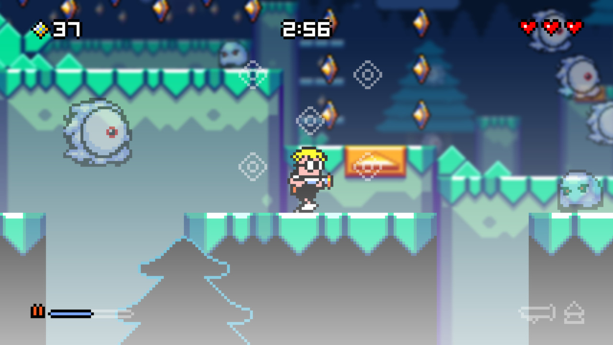
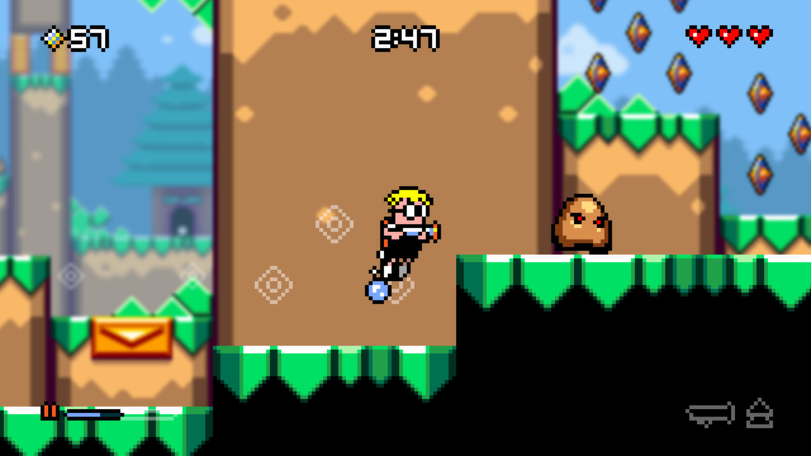
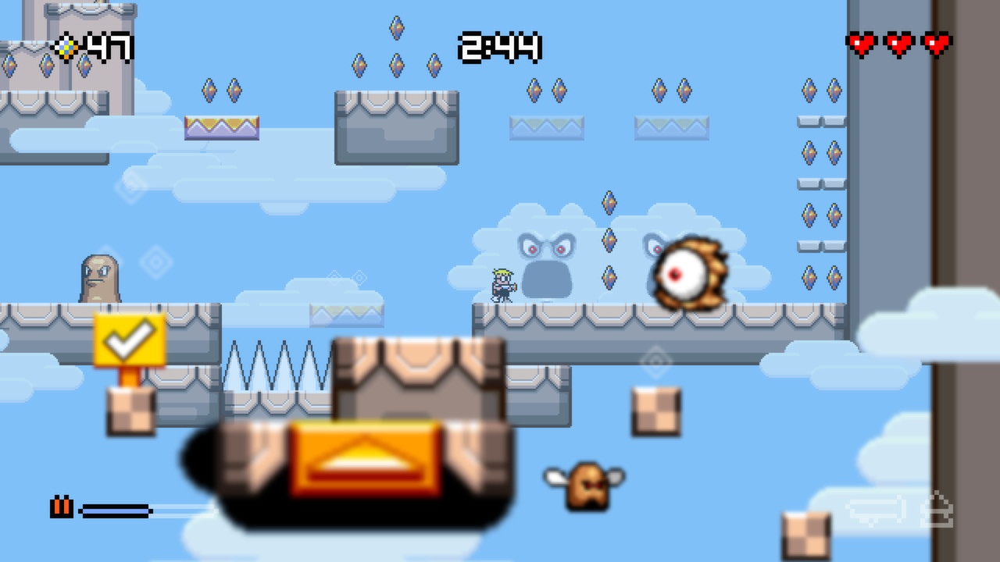

Jools Watsham describes Max jetting between background and foreground playfields and credits Renegade Kid’s development.
Read creator press release ↗02 / CASE STUDY
Interaction precedent
Depth becomes a place, not an effect.
Mutant Mudds demonstrates a clean idea: scenery can become playable when the player crosses between foreground and background. That idea seeded a technical study, then evolved into a different original game.

Reference, not recreation
Mutant Mudds was originally developed and self-published by Renegade Kid, founded by Jools Watsham and Gregg Hargrove. Current editions are published by Atooi. This project studies its depth-plane interaction; it does not copy its characters, levels, story, jetpack, weapon, or visual identity.
The current Steam listing identifies Atooi as developer/publisher of Mutant Mudds Deluxe and provides the official screenshots used here.
View Steam listing ↗

All three screenshots: Mutant Mudds Deluxe © Atooi / Renegade Kid. Locally archived from the official Steam listing for educational analysis.
Three meaningful moments
The mechanic changes how the player reads the entire screen.
The first plane shift
A launch pad sends Max away from the camera. A background that looked decorative becomes active level geometry.
Design lesson: one clear transition can reframe every visible surface.Visible but unreachable
Gems, enemies, and routes remain visible on other planes before the player finds the correct access point.
Design lesson: perception can reveal possibility without granting immediate access.Scale confirms depth
Max and the active space change apparent size between planes while inactive layers soften.
Design lesson: scale, focus, and contrast jointly communicate playable depth.Player action → system response → understanding
Each verb teaches the spatial model.
MoveThe character traverses only the active plane.The layers are separate playfields, not one flat collage.
JumpVertical timing stays conventional.A familiar rule anchors an unusual spatial system.
HoverA jetpack extends airtime and distance.Previously impossible gaps become legible opportunities.
ShootA water cannon removes enemies on the active plane.Threat interaction is depth-specific.
Shift depthA marked pad launches Max between planes.Background and foreground are destinations.
CollectDiamonds reward exploration across planes.Reading the whole image is valuable.
Prototype evidence
The first original study made all three planes playable.

- HUD names the active collision plane
- Scale changes reinforce depth position
- Orange, green, and blue separate plane geometry
- Transition pads create authored plane changes
- Relics reward exploration of every layer
Revision
Depth Perception replaces visible industrial planes with competing versions of reality. It keeps legibility and discards the foundry fiction.
Mutant Mudds
Proves that a 2D platform game can make foreground and background mechanically meaningful.
Phase Shift Foundry
Tests three planes, scale, transitions, UI, combat, collectibles, and browser performance in original code.
Depth Perception
Uses layered space to ask a different question: what happens when visual evidence stops being dependable?